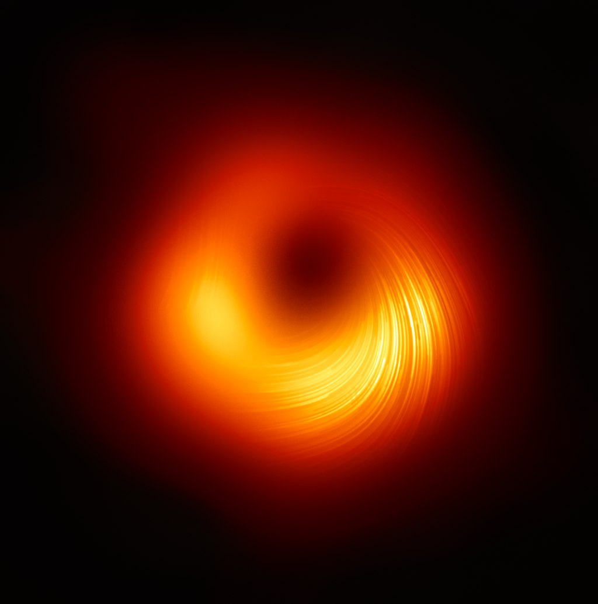

Черные дыры
Чёрная дыра — область пространства-времени, гравитационное притяжение которой настолько велико, что покинуть её не могут даже объекты, движущиеся со скоростью света, в том числе кванты самого света. Граница этой области называется горизонтом событий. В простейшем случае сферически симметричной чёрной дыры он представляет собой сферу с радиусом Шварцшильда, который считается характерным размером чёрной дыры.
Кроме того, чёрными дырами часто называют объекты, не строго соответствующие данному выше определению, а лишь приближающиеся по своим свойствам к такой чёрной дыре — например, это могут быть коллапсирующие звёзды на поздних стадиях коллапса.